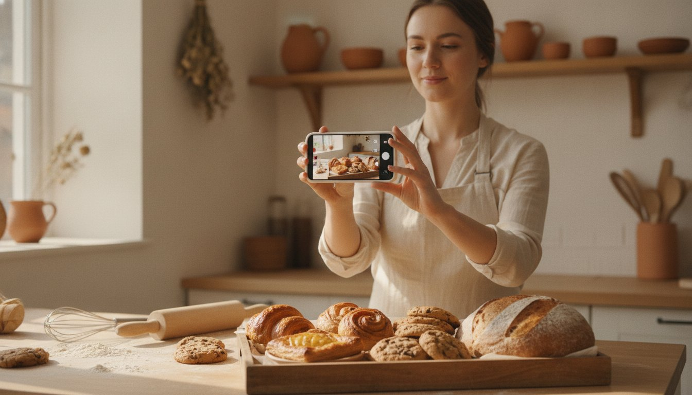

For a small food business, Instagram is often your very first storefront. It's where a customer meets your brand, sees your product, and decides whether they trust you — usually before they've ever tasted a single bite.
But here's the thing nobody tells you: posting pretty photos isn't the same as selling. Plenty of makers have a few thousand followers and barely any orders to show for it. The gap between "nice feed" and "real sales" isn't talent or luck. It's strategy.
Here's how to turn your Instagram into something that actually sells — step by step. You don't need a big budget, a huge following, or a professional camera to start.
1. Set Up a Profile That's Built to Sell
Before you post anything else, get the foundation right. Your profile is doing sales work 24/7 — make sure it's working for you.
- Switch to a free Business or Creator account. A personal account technically works, but the free Business account is worth it: it unlocks insights (so you can see what's working), contact buttons, and the ability to boost or promote a post in a couple of taps when you want to put a few dollars behind your best content and reach more people. Go to Settings → Account type.
- Write a bio that answers one question: "What do you make, and how do I get it?" Include what you sell, where you're based, and how to order. Example: "Small-batch sourdough & pastries · Port Coquitlam, BC · Order below ↓"
- Add a clear link. Whether it's your website, an order form, or a simple link-in-bio tool, give people one obvious place to buy.
- Use your logo as your profile photo so you're instantly recognizable.
- Set up Highlights for the questions you get asked most: Menu, How to Order, Reviews, Pickup & Delivery, FAQ.
Pro Tip: The first line of your bio is prime real estate. Make it say exactly what you sell and how to buy — not a vague slogan. "Joy in every bite" is pretty, but "Custom celebration cakes · Order 1 week ahead" actually sells.
2. Make Your Product the Star
People eat with their eyes first. On Instagram, your photos are your product until someone tastes it — so they need to make people hungry.
You don't need fancy gear. You need good light and a little intention:
- Shoot in natural light. Set up near a window and turn off your flash. Soft daylight makes food look fresh and appetizing; harsh indoor light makes it look flat.
- Keep backgrounds simple. A clean counter, a wooden board, or a solid-colour surface lets the food stand out.
- Get close. Show texture — the flaky layers, the gooey centre, the crumb. Close-ups sell.
- Show it in real life. A hand holding the product, a first bite, steam rising from a fresh bake. Lifestyle shots build desire and trust.
- Stay consistent. A recognizable look — similar lighting, colours, and style — makes your feed feel like a real brand.
Pro Tip: Capture the "money shot" — the moment that makes someone hungry. The cheese pull, the first bite, the drizzle of glaze, the steam off a fresh loaf. That one frame can do more selling than a paragraph of caption.
3. Post With a Purpose: The Content Mix
If every single post screams "BUY NOW," people tune out. The accounts that sell well mix it up so followers stay engaged and ready to buy. Aim for a balance like this:
- Product posts — your best photos, what the item is, and how to order it.
- Behind-the-scenes — you in the kitchen, your process, an early morning bake. This is what builds genuine connection.
- Social proof — screenshots of kind reviews, reposts of customers enjoying your food.
- Value — a quick tip, a pairing idea, how to store or reheat your product.
- Your story — why you started, what your food means to you. People buy from people.
A simple rule of thumb: for every "here's how to buy" post, share two or three that entertain, teach, or connect. You're building a relationship, not running an ad all day.
4. Reels Are Your Reach Engine
Here's the single biggest shift in how Instagram works today: Reels get shown to people who don't follow you yet. Regular posts mostly reach your existing followers. Reels are how new customers discover you.
You don't need to dance or be on camera. Easy Reel ideas for food makers:
- A short, satisfying clip of your process — mixing, piping, glazing, slicing.
- Packing up a customer order start to finish.
- "A morning in my kitchen" — a quick day-in-the-life.
- Three ways to enjoy your product.
- A before-and-after: raw dough to finished bake.
Keep them short (under 30 seconds is plenty), grab attention in the first two seconds, add captions for people watching on mute, and use trending — but relevant — audio.
5. Make It Ridiculously Easy to Buy
This is where most small food businesses leak sales. Someone sees your bake, wants it… and then can't figure out how to actually order. So they don't.
It helps to understand one thing up front: you can't really check out inside Instagram. There's no true in-app purchase — Instagram is where people discover you, but the actual sale happens on your website or order form. So your whole job is to get people to that one link as smoothly as possible.
The two best ways to sell on Instagram are both about that link:
- The link in your bio — your always-on storefront link. Point it to your website, online store, or a simple order form, and mention it constantly: "tap the link in our bio to order."
- The link sticker in your Stories — drop it on any Story so people can tap straight through to buy in the moment. It's perfect for restocks, new drops, and "order for this weekend" reminders.
A couple more ways to remove friction:
- Offer a "DM to order" option for people who'd rather message you directly — and reply fast. A quick reply often closes the sale; a slow one loses it.
- Pin an "How to Order" post to the top of your profile and keep a Highlight for it.
Pro Tip: End every product post with a one-line call to action. Something like: "Want one? Tap the link in our bio or our latest Story to order." Don't assume people know what to do next — tell them.
6. Use Stories Every Day
Stories are low-effort and high-trust. They keep you top of mind, and because they feel casual and unpolished, they're perfect for building a real connection.
- Share works in progress, restock alerts, and market-day reminders.
- Use interactive stickers — polls ("Which flavour next?"), questions, and quizzes — to boost engagement and get real feedback.
- Repost happy customer messages and tags (with permission). Nothing sells like other people vouching for you.
- Create urgency: "Only 3 boxes left this weekend" or a countdown sticker for your next drop.
7. Get Found Locally
If you sell in a specific area, local discovery matters far more than vanity reach. A thousand followers across the world won't buy your cookies — your neighbours will.
- Add your location to every post and Story. Tag Port Coquitlam, your neighbourhood, or the market you're selling at.
- Use a mix of local and niche hashtags — things like #PortCoquitlam, #YVReats, #VancouverFoodie, plus tags specific to your product (#sourdoughbread, #customcakesvancouver).
- Tag the markets, events, and local businesses you're part of. They'll often reshare you to their audience.
8. Build Community, Not Just Followers
Follower count is a vanity number. Engaged, local customers who feel a connection to you — that's what actually grows a food business.
- Reply to every comment and DM, and do it quickly. Customers and the algorithm both reward it.
- Engage with other local makers and your own customers' accounts. Be a real part of your community.
- Repost customer photos. User-generated content is free, authentic, and more convincing than anything you can say about yourself.
Followers who feel seen become repeat buyers — and they tell their friends.
9. Stay Consistent (A Simple Weekly Plan)
Consistency beats perfection every time. You don't need to post all day — you need to show up regularly. A realistic weekly rhythm looks like this:
- 3 feed posts or Reels spread across the week.
- Stories most days — even one or two quick clips.
- One "how to order" reminder so new followers always know how to buy.
Pro Tip: Batch your content. Next time you're producing, set aside 20 minutes to shoot photos and a quick Reel. One kitchen session can give you a whole week of posts — so you're never scrambling for something to share.
"I almost gave up on Instagram. Then I started posting Reels of my bakes and replying to every single DM. Within two months, most of my weekend orders were coming straight from Instagram."
From a Feed to a Real Business
Instagram won't replace a great product — but it's the cheapest, most powerful storefront a small food business has. You don't need to go viral. You need to show up consistently, make your product look irresistible, make it dead simple to buy, and treat your followers like the community they are.
Start with one step this week. Fix your bio. Shoot one good Reel. Reply to every DM. Small, steady moves add up faster than you'd think.
And when your orders start growing beyond what your home kitchen can handle, that's where we come in. A licensed commercial kitchen gives you the space, equipment, and permits to scale — without the cost of building your own.
Book a free kitchen tour and let's talk about growing your food business.